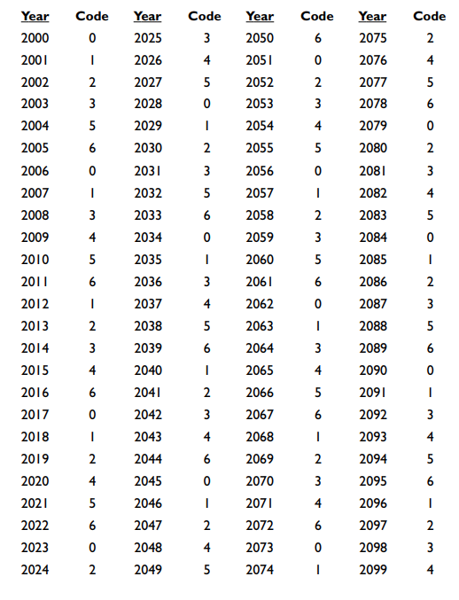

Day of the Week
Given any date, you can figure out the day of the week on that specific day with the following steps.
General Solution
Follow these instructions:
- Remember or note down these two codes:
January = 6
February = 2
March = 2
April = 5
May = 0
June = 3
July = 5
August = 1
September = 4
October = 6
November = 2
December = 4
Beware!
For leap years, the code for January will become 5 and the one for
February will be 1.
However, the good news is that we do not have to remember all these
Trick
codes. The trick is to know what years have 0 codes, for
example, 2006. Then, for every year after 2006, your code increases
by 1 - 2007 has a 0 + 1 = 1 code. However, if you come
across a leap year, such as 2008, you have to add two. Therefore,
2008 has a 1 + 2 = 3 code (2007’s code + 2). This cycle continues
on, until you reach 6 or 5. If the next year isn’t a leap year, a six code
from the previous year would become a 0 code, while a 5 code
would become a 0 code if it was a leap year. Essentially, 7 codes are
instead 0 codes.
Years from 2000 to 2009 (Let the year be 2000 + x):
Year code = x/4 (discard the remainder) + x
Finally, subtract the largest multiple of 7 from your current year code.
Example
For the year 2065, we have x as 65. x/4 = 65/4 = 16 R 1 (We forget the 1, or the remainder)
Year code = 16 + 65 = 81
Largest multiple: 77
Therefore, the year code for 2065 is 81-77 = 4 - Add the date (1-31), month codes, and year codes together, then subtract the largest multiple of 7 from this
sum.
Eg. March 19, 2061
19 + 2 + 6 = 27
27-21 = 6, or Saturday.
January 1
- Remember this code:
Monday = 1
Tuesday = 2
Wednesday = 3
Thursday = 4
Friday = 5
Saturday = 6
Sunday = 7 or 0 - Take the last two digits of the year and multiply it by 25%, or ¼. Next, discard the change, and add the
original amount.
Example
In year 2067, we take these steps:
67 * 25% = 67 * ¼ = 16.75
Discarding the change, we have 16.
Adding the original amount, 67, we have: 67+16 = 83
We subtract the largest multiple of 7, 77 from 83 to calculate: 83-77 = 6, or Saturday!